LVM3-M4-:CHANDRAYAN-3 MISSION

LIVE TELECAST OF SOFT LANDING
The mission objectives of Chandrayaan-3 are:
1. To demonstrate Safe and Soft Landing on Lunar Surface |
2. To demonstrate Rover roving on the moon and |
3. To conduct in-situ scientific experiments. |
Chandrayaan-3 is a follow-on mission to Chandrayaan-2 to demonstrate end-to-end capability in safe landing and roving on the lunar surface. It consists of Lander and Rover configuration. It will be launched by LVM3 from SDSC SHAR, Sriharikota. The propulsion module will carry the lander and rover configuration till 100 km lunar orbit. The propulsion module has Spectro-polarimetry of Habitable Planet Earth (SHAPE) payload to study the spectral and Polari metric measurements of Earth from the lunar orbit.Lander payloads: Chandra’s Surface Thermophysical Experiment (ChaSTE) to measure the thermal conductivity and temperature; Instrument for Lunar Seismic Activity (ILSA) for measuring the seismicity around the landing site; Langmuir Probe (LP) to estimate the plasma density and its variations. A passive Laser Retroreflector Array from NASA is accommodated for lunar laser ranging studies.Rover payloads: Alpha Particle X-ray Spectrometer (APXS) and Laser Induced Breakdown Spectroscope (LIBS) for deriving the elemental composition in the vicinity of landing site. |
Three dimensional views of Chandrayaan-3 modules are provided below:
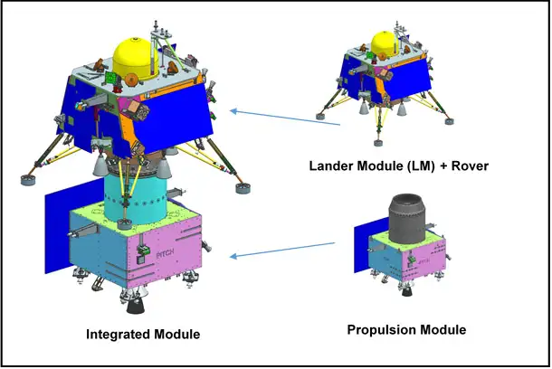
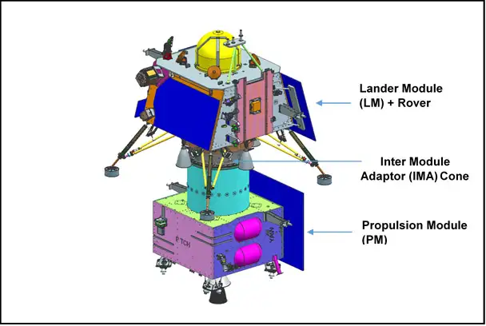
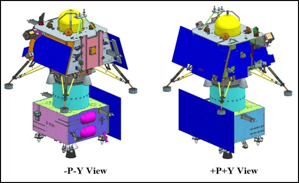
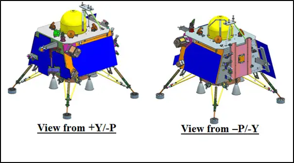
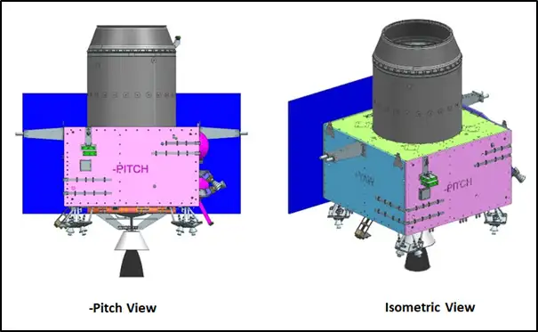
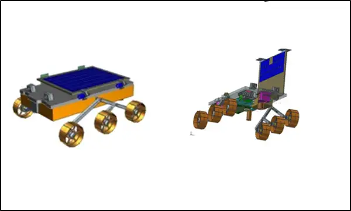
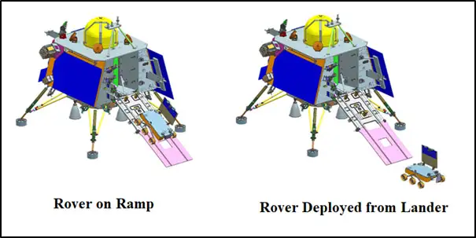
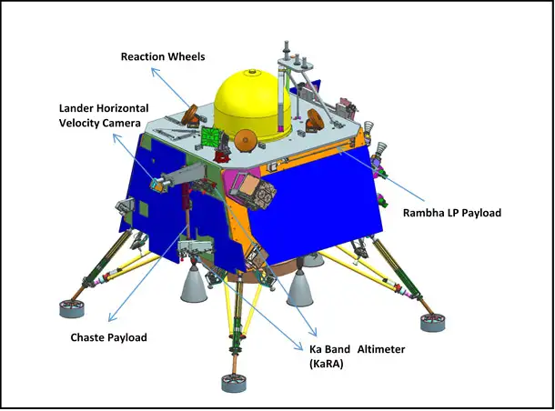
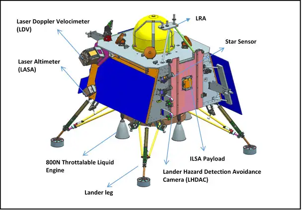
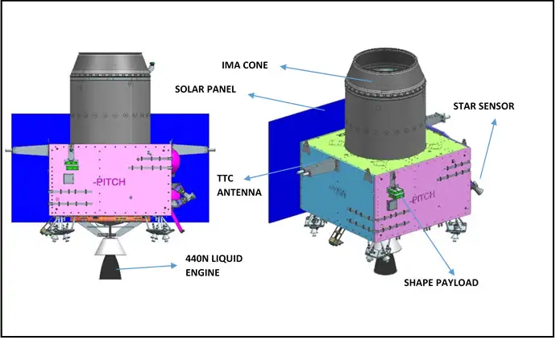
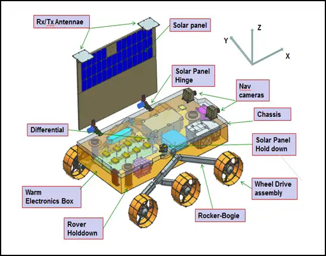
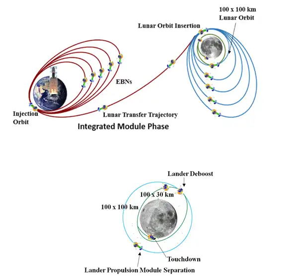